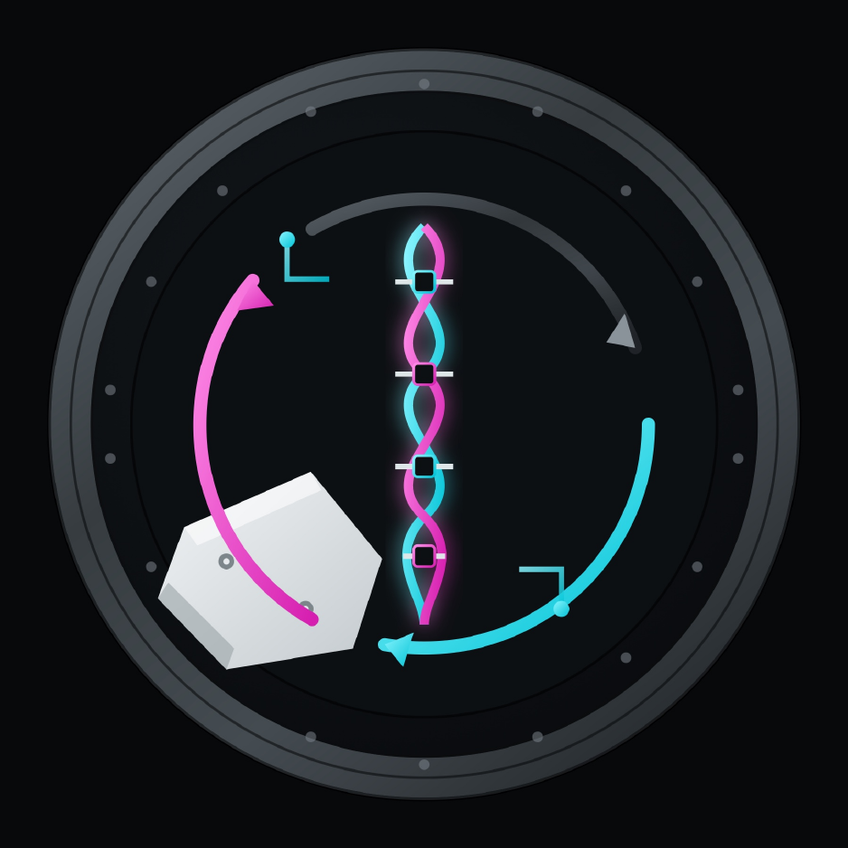

Specter Realms · Colony Protocol · Pack 3
Colony Protocol: Influx
Ship-in-void lab. Salvage debris into typed matter, breed advanced resources, digitize the workspace.
Genetics first, not something for nothing.
What this is
A Specter Realms training module. Live aboard a prebuilt ship in the void: debris → typed matter → genetics → scale. Headline genetics and recycle, not an EMC blur. Soft leans until smoke-tested. Quests teach and reward; they never hard-gate.
Series order · V → E → I → L
Recommended order is a guide, not a lock. Skippers miss teaching and lore pacing. Liminal includes the systems.
Install (Prism)
Prism → Add Instance → Download from CurseForge (or Import zip from this pack’s CF page) Allocate 6–8 GB RAM · launch NeoForge profile
Dev loop (maintainers): make serve then Prism pre-launch pulls http://localhost:8080/pack.toml.